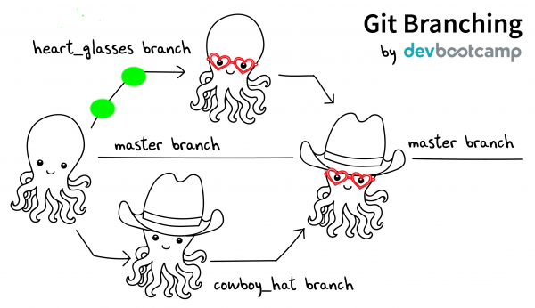
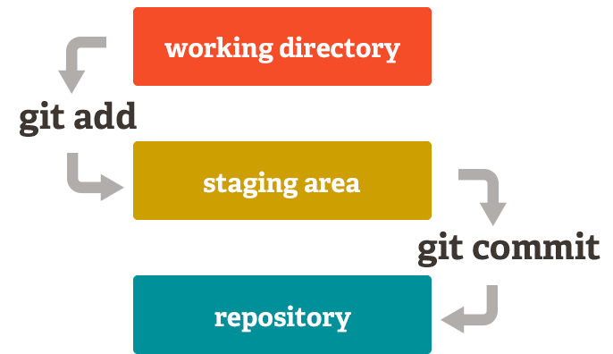
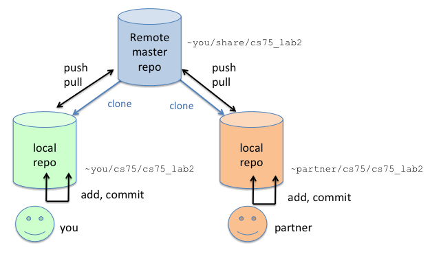
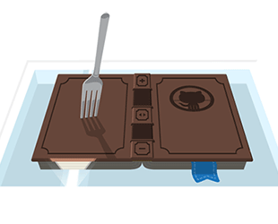

SWI 2
Libor Pichler lpichler@redhat.com
Roman Blanco rblanco@redhat.com
Today agenda
Organizational Info
What it will about ?
Remind git

Repository
Remotes
Commit, branches

Git add, commit

Git fetch, push, pull

Merge and rebase
Conflict solving

GitHub workflow, pull request

Break ?
Let's work!
Fork ManageIQ repositories

Clone ManageIQ repositories
Update your PATH
TASK: "create push to your fork" script
Have a great day!